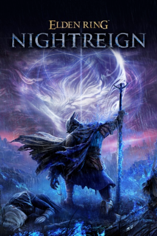

Elden Ring Nightreign is a rougelike-soulslike multiplayer game. It takes place in limveld where you are exploring the map avoiding the encroaching night to eventually fight a nightlord.
The gameplay is similar to Elden Ring being that it is a souls game. The game does take an approach to faster gameplay giving you "surge sprint" which allows you to move much faster as a similar speed to torrent in Elden Ring. As far as weapons go, you explore the world looking for item and weapon drops from various sources like chests and enemies.
This game is a masterpiece of a fromsoftware game. Not only did they do an amazing job creating a game that is further from what they normally do they also have succeeded in making the game very replayable. There is a little problem for the game and that is the lack of content updates, the game used the old weapons and enemies from Elden Ring and a few from the dark souls series but doesn't include weapons from the Elden Ring DLC as well as other dark souls weapons which to be fair wasn't promised. I think the game was definitely worth the $40 price tag but would benefit from a little more attention.